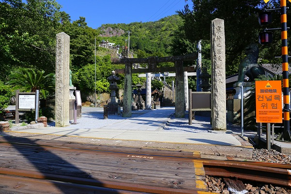
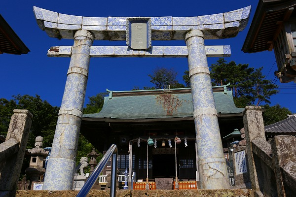

佐賀である。有田である。
有田といえば言わずと知れた焼物の街である。
有田の中心街には数多くの有田焼の店が軒を並べている。
そんな一画に素敵なお寺を訪ねたハナシなのだが、例によってまずは寄り道から始めさせていただきますよ。
有田の街中にある
陶山（すえやま）神社。
有田焼の窯元や職人を守護する有田の街と切っても切れない縁を持つ神社である。
寄り道した上にさらに脇道に入らせていただくが、「陶山」というのはこの地区の昔の地名らしい。
陶山といえばこの辺りの苗字に多く「すやま」と読む場合が多いのかな。
私の友人にも陶山（すやま）姓の者がいるため、この神社の事もずーっと「すやまじんじゃ」だと思っていたが「すえやまじんじゃ」なんですって。
陶山姓は日本に8600人ほどおり、苗字の全国順位は1807位だそうです。
因みに全国に8600人いる苗字としては宇佐美、谷崎、杉などがおり、そんなに珍しい苗字ではないようですね。
スイマセン。余談が過ぎました。陶山神社でございます。

陶山神社は有田焼の店が並ぶ市街地からやや上にあり、階段を登っていくといきなり踏切がある。

その踏切を渡ると鳥居があり、更に階段が続く。
参道にある日本最大の青銅の狛犬。
ツヤツヤしてるから青磁なのかと思ったら青銅製なんですって。
明治18年の作。
振り返ると鳥居の向こうに特急列車が通過中だった。
参道を線路が横切る神社は全国にも幾つかあるがJRの特急車両が参道を横切るのは珍しいのではなかろうか。
（あったとしてもここではそんなに重要な話題ではないのでいちいち指摘していただかなくても結構です）

で、階段を登りきると素敵な鳥居がお出迎え。
有田のシンボルとも言える
陶製の鳥居である。
薄いブルーの模様が印象的なこの鳥居、明治21年に奉納された。
さすがに130年以上経っているので細かいヒビはあるものの、露天にある割には色褪せず、ツヤもある。さすが有田焼。
扁額も勿論有田焼。
これも一部欠けているが、エッジ部分の模様の細かさなどに、有田職人の腕の良さとプライドが見て取れる。
鳥居を潜ると有田を代表する名匠、十代目今右衛門の手による
陶製の狛犬が。
明治20年の奉納。
他にも陶製の水甕など境内は有田焼の美術館といっても過言ではないほどの名品が並んでいる。
しかもそのほとんどが明治20年前後に奉納されたものだ。
それは明治20年にこの神社で有田焼の祖（陶祖と称している）である
李参平を祀ることにより、この神社が有田焼の神様と人々に認識された事と無関係ではあるまい。
境内には立派な御神木があり、その前には小さな陶器が数多く奉納されていた。
さて。
寄り道が過ぎました。
ここからが本題です。
陶山神社の近くに
桂雲寺というお寺がある。
私自身も危なく忘れかけていたが、有田を訪れた本命はこちらのお寺である。
お目当てはこちらの仁王様。
コンクリ仏師福崎日精の手によるものだ。
福崎日精は戦前戦後に活躍した当時数少なかったコンクリ仏師で、当サイトでも度々とりあげさせていただいている。
大淵寺護国観音
朝護孫子寺
江東寺
身代り観音
子安観音寺
などなど。
他にも当サイトでは紹介していないコンクリ像が多数あるのだが、福崎日精研究家である
つるまさんのブログがかなり詳しいので、詳細を知りたい方はそちらを参照して下さい。
他の福崎作品に比べると表面のマチエールがざらざらした感じ。
風雨で表面が洗われて摩滅した感じではないので意図的にこのような仕上げがなされたと考えていいと思う。
その意図は何なのだろう？
コンクリとは思えない躍動感のある天衣。
いや、コンクリ故にこのようなヒラヒラ感が出たのかもしれない。
門前には小さなお堂があった。
中には中央に花頭窓左右に丸窓がしつらえてあった。
中央の花頭窓には弘法大師像。右の丸窓には小さい仏像が。
気になったのが左側の丸窓。
よーく見ると
一本指を立てた手が納まっているではないか！
何だこりゃ。
イチバーンと言いたいのだろうか？何が？誰が？
これは
御手の観音と呼ばれる観音サマの手なのだ。
説明によれば二つの言い伝えがあるという。
ひとつは江戸中期密貿易で活躍した嬉野次郎左衛門がインドから持ち帰った玉彫が一度盗まれそれを木彫で作り直したもの。
もうひとつは鹿島市の蓮厳院の岩屋観音にある千手観音の手の一本が飛んできたという伝説。
陶芸職人の腕が上達するとされ、今でも参詣する人が絶えないという。
ある意味有田らしい観音様なのである。
それにしても手だけの観音様って凄いなあ。やっぱりどう見てもイチバァーン！（
©ハルク・ホーガンね）ってやってるようにしか見えないっしょ。
（前説が長かった割には小ネタでスミマセン）